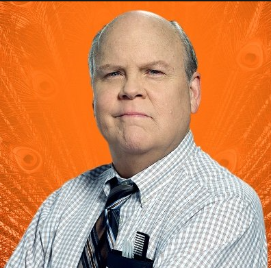

Dennis Dirk Blocker (nascido em 31 de julho de 1957) é um ator americano. Ele ganhou seu primeiro papel regular na TV em Baa Baa Black Sheep (1976-1978), interpretando o piloto Jerry Bragg. De 2013 a 2021, ele estrelou como o detetive Michael Hitchcock na série de comédia da Fox / NBC Brooklyn Nine-Nine . Ele é filho do ator Dan Blocker e Dolphia Lee Blocker (nascida Parker ). Seu irmão é o produtor David Blocker .
Blocker começou a aparecer na televisão americana em 1974, atuando em um episódio de Marcus Welby, MD aos 16 anos. Ele teve papéis como convidado em ER ; Casinha na Pradaria ; Os Arquivos X ; Beverly Hills, 90210 ; Walker, Texas Ranger ; Corte Noturna ; Assassinato, Ela Escreveu ; M*A*S*H ; Doogie Howser, MD ; Matlock ; Salto Quântico e CHiPs . Aos 19 anos, ele foi escalado para o papel de 1º tenente Jerry Bragg no drama militar Baa Baa Black Sheep(1976-1978). Ele não teve outro papel regular na série de TV até ser escalado para Brooklyn Nine-Nine (2013-2021).
Ele desempenhou um papel coadjuvante em Bonanza: The Return como um repórter chamado Fenster, embora não como filho de Hoss Cartwright, o papel tornado icônico por seu pai.
Um artigo publicado pela NBC afirma que (em uma data não especificada) "Blocker voltou à escola para obter seu diploma de bacharel em artes para poder ensinar K-12" e em 2017 publicou um livro que ele havia escrito, Master and the Little Monk , sobre "um menino solitário que faz amizade com um aliado e mentor único".
Seus créditos no cinema incluem Midnight Madness (1980), Raise the Titanic (1980), The Border (1982), Poltergeist (1982), Starman (1984), Trouble in Mind (1985), Made in Heaven (1987), Prince of Darkness (1987), Pink Cadillac (1989), Cutting Class (1989), Equinox (1992), Short Cuts (1993), Night of the Scarecrow (1995) e Mad City (1997).